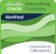

Étudiante en BTS SIO option SISR, je me spécialise dans l'administration des réseaux, la sécurité des infrastructures et la gestion des systèmes. Ce portfolio regroupe mes projets réalisés en formation et en stage.
Inventaire et gestion des ressources numériques, contrôle des habilitations et des accès, supervision de la continuité de service, gestion des sauvegardes et respect des règles d'utilisation
Collecter, suivre et orienter les demandes. Traiter les demandes concernant les services réseau, système, applicatifs.
Participer à la valorisation de l'image de l'organisation sur les médias numériques. Participer à l'évolution d'un site Web exploitant les données de l'organisation.
Analyser les objectifs et les modalités d'organisation. Planifier les activités et évaluer les indicateurs de suivi d'un projet.
Réaliser les tests d'intégration et d'acceptation d'un service. Déployer un service et accompagner les utilisateurs dans sa mise en place.
Mettre en place un environnement d'apprentissage personnel. Mettre en œuvre des outils et stratégies de veille informationnelle. Gérer son identité professionnelle.
Création d'un site web pour la Maison des Ligues de Lorraine
Installation, configuration et déploiement d'une solution de gestion informatique pour l'inventaire et le suivi du parc matériel.
Mise en place d'un serveur FTP Filezilla pour centraliser le dépôt de fichiers et sécuriser les transferts.
Segmentation du réseau avec des VLAN pour isoler les flux et améliorer la sécurité du parc.
Déploiement d’un point d’accès et configuration d’un serveur DHCP pour automatiser l’adressage réseau.

Introduction à la cybersecurity cisco